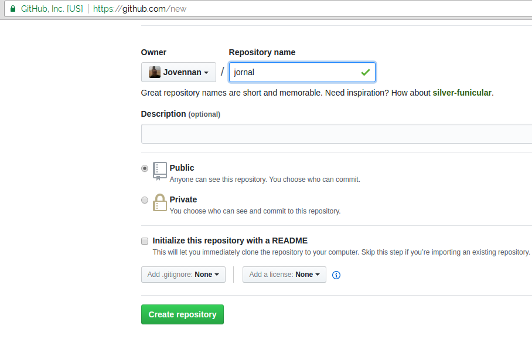
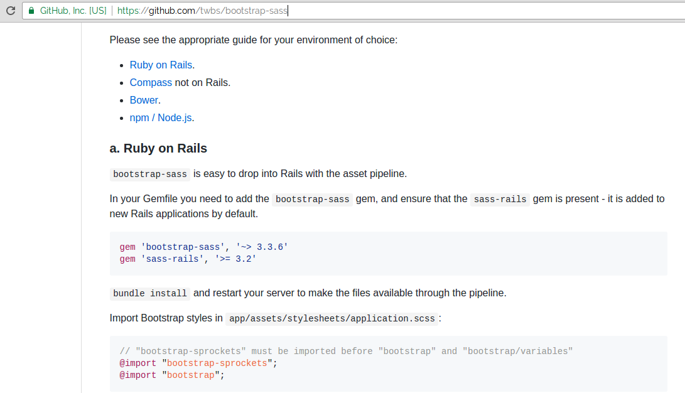

Aula 3 - Mão na massa...

Construindo um novo APP
Abra o terminal e digite o código abaixo, para criar um novo APP
$ rails new jornal -d postgresqlConfigurações do SGBD
Edite o arquivo config/database.yml:
Atualize as informações
username: unipe
password: unipe
host: localhost
port: 5432Salve
no terminal:
$ rails db:createAcesse a pasta do APP
$ cd jornalGere o controller
Acessando Conteúdo Estático
$ rails generate controller paginas_estaticasCrie uma página
Na pasta: app/view/paginas_estaticas
Crie o arquivo: index.html.erb
No arquivo insira o seguinte conteúdo:
<h1> Olá Rails </h1>
<%= @nome %>
Crie uma action no controller
No arquivo: app/controller/paginas_estaticas_controller.rb
Insira o seguinte conteúdo:
def index
@nome = "seu nome"
end
crie uma rota para a action
No arquivo: config/routes.rb
Insira o seguinte conteúdo:
root to: "paginas_estaticas#index"
executo a aplicação
$ rails s
Versionando nosso APP
Acesse a pasta do APP:
$ git init$ git add -A$ git commit -m "olá rails"No navegador
Acesse Sua conta do GitHub
No terminal
$ git remote add origin git@github.com:seuUsuario/jornal.git$ git push -u origin masterEstilizando nosso APP
Acesse o Repositório do Bootstrap-sass
No arquivo gemfile adicione:
gem 'bootstrap-sass', '~> 3.3.6'Baixe a Gem:
$ bundle installAltere o arquivo app/assets/stylesheets/application.css para application.scss e adicione:
@import "bootstrap-sprockets";
@import "bootstrap";
body { padding-top: 100px; }
footer { margin-top: 100px; }
table, td, th { vertical-align: middle !important; border: none !important; }
th { border-bottom: 1px solid #DDD !important; }Insira no arquivo app/assets/javascripts/application.js
//= require bootstrap-sprocketsModifique o Template
Edite o arquivo app/views/layouts/application.html.erb
Iserir o código abaixo, logo após a Tag <body>
<div class="navbar navbar-default navbar-fixed-top">
<div class="navbar-inner">
<div class="container">
<ul class="nav navbar-nav">
<li><a href="/">Início</a>
<li><a href="/noticias">Notícias</a></li>
</ul>
</div>
</div>
</div>
Modifique o Template
Ainda no arquivo application.html.erb
Substitua a Tag
<%= yield %>
<div class="container">
<%= yield %>
</div>
Modifique o Template
Ainda no arquivo application.html.erb
Iserir o código abaixo, acima da Tag </body>
<footer>
<div class="container">
Unipe 2017
</div>
</footer>
execute a aplicação
$ rails s
Pluralização com inflections
Na pasta config/initializers
Edite o seguinte arquivo: inflections.rb
E copie o código disponível em...
https://github.com/Jovennan/jornal/wiki/inflections.rb
Testando o Scaffold
Como o Rails gera os artefatos (Models - Cotrollers - Views) automaticamente
Gere o componente Noticia
$ rails generate scaffold Noticia autor:string titulo:string conteudo:text imagem:stringNo terminal execute os comandos:
$ rails db:migrate
$ rails serveracesse http://localhost:3000
No arquivo gemfile adicione:
gem 'carrierwave'Baixe a Gem:
$ bundle installAgora podemos gerar o código para gerenciar uploads. No terminal execute:
rails generate uploader ImagemEdite o arquivo app/models/noticia.rb acrescentando:
mount_uploader :imagem, ImagemUploader
Edite o arquivo app/views/noticias/_form.html.erb substituindo na linha 31:
<%= f.text_field :imagem %>
por:
<%= f.file_field :imagem %>
e na linha 1:
<%= form_for noticia do |f| %>
por:
<%= form_for(noticia, :html => { :multipart => true }) do |f| %>
Edite o arquivo app/views/noticias/show.html.erb substituindo na linha 20:
<%= @noticia.imagem %>
por:
<%= image_tag(@noticia.imagem_url, :width => 600) if @noticia.imagem.present? %>
No terminal execute os comandos:
$ rails serveracesse http://localhost:3000
Gere o componente Comentario
$ rails generate scaffold Comentario autor:string conteudo:text noticia_id:integerNa pasta db/migrate/ edite o arquivo terminado em 'create_comentarios.rb' depois de:
t.timestamps
endInsira:
add_foreign_key :comentarios, :noticias, column: :noticia_idNo terminal execute os comandos:
$ rails db:migrate
$ rails serverEdite o arquivo app/models/noticia.rb acrescentando:
has_many :comentarios
Edite o arquivo app/models/comentario.rb acrescentando:
belongs_to :noticia
Edite o arquivo app/views/noticias/show.html.erb após a Tag de imagem:
<%= image_tag(@noticia.imagem_url, :width => 600) if @noticia.imagem.present? %>adicine o seguinte:
<h3>Comentários</h3>
<% @noticia.comentarios.each do |comentario| %>
<div>
<strong><%= comentario.autor %></strong>
<br />
<p><%= comentario.conteudo %><p>
</div>
<% end %>
<%= render 'comentarios/form' %>Edite o arquivo app/controllers/noticias_controller.rb na action show:
def show
enddeixe-a assim:
def show
@noticia = Noticia.find(params[:id])
@comentario = @noticia.comentarios.build
endEdite o arquivo app/views/comentarios/_form.html.erb e após:
<div class="field">
<%= f.label :conteudo %>
<%= f.text_area :conteudo %>
</div>
adiciona:
<div class="field">
<%= f.hidden_field :noticia_id %>
</div>
Melhorando o Layout
adicione classes bootstrap
No terminal execute os comandos:
$ rails db:migrate
$ rails server